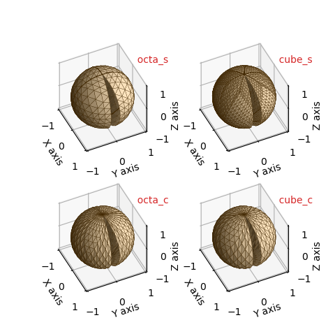
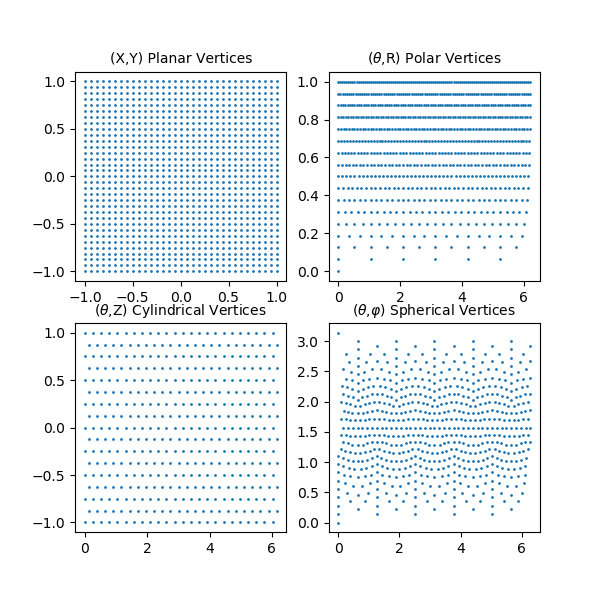
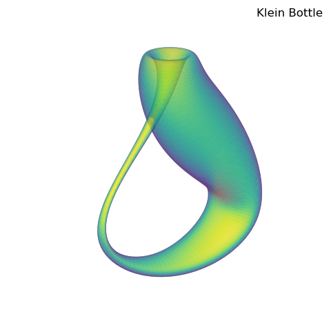

Base Surfaces¶
The grid structure for the four surface classes are developed from sets of base surface geometries. These base surfaces are composed of a grid of connected triangles. All grid surfaces are normalized and centered in a cube in the domain of -1 to 1. The constructors of a xxxxxSurface class have two arguments controlling the grid; rez and basetype. ( xxxxxSurface represents either PlanarSurface, PolarSurface, CylindricalSurface, or SphericalSurface class names). A surface object is constructed as:
surface = xxxxxSurface(rez,basetype)
The surfaces are generated by recursively subdividing the base surfaces triangles into four smaller triangles controlled by the rez argument. As a result, the number of triangular surfaces for a surface object is 4rez times the number of faces of the basetype. This argument is an integer ranging from 0, no subdivisions, to 7 with a default value of 0. The basetype argument is a string, the label for one of the class’s basetypes. The basetypes and corresponding default values for each class are described in the following sections of this tutorial.
The number of faces, edges and vertices for a xxxxxSurface can be determined from the class method:
values = xxxxxSurface.fev(rez,basetype)
which returns a 3D array of integers corresponding to these values for a xxxxxSurface of rez and basetype. If no arguments are given, defaults are used. In addition, the surface object string representation, str(surface), contains the class name, rez, basetype, number of faces and number of vertices.
General Geometries¶
Each surface class has several basetypes which can be used to construct the surface object. In this section, all surface objects were generated with a default rez of 0 using:
surface = xxxxxSurface(basetype)
For any surface class, any basetype will produce similar geometries. However, a specific type may have axial or planar symetries which may be applicable to a specific function used for mapping. These symetries can also be adjusted using the object transform method before functional mapping. Selecting a specific basetype can also be particulary beneficial when several overlapping surfaces are combined to form a final surface geometry, or when surface clipping is applied.
Planar Surface¶
The default basetype for PlanarSurfaces is quad. Both the oct1 and oct2 will have vertices along the x and y axis. At the origin, oct2 has eight neighboring faces, whereas oct1 has four. The quad will have vertices along |x|=|y|, but have faces that will cross the axis. With increasing values of rez, planar surfaces are subdivided into smaller triangles and maintain the square plate shape.
| coordinate system | Planar | ||
| default basetype | quad | ||
| vertex domain | -1 ≤ x ≤ 1 | -1 ≤ y ≤ 1 | z = 0 |
| basetype | faces | edges | vertices |
|---|---|---|---|
| quad | 4 | 8 | 5 |
| oct1 | 8 | 16 | 9 |
| oct2 | 8 | 16 | 9 |
Polar Surface¶
The default basetype for PolarSurfaces is hex. The two basetypes of squ and hex have 4 and 6 fold symetry about the z-axis, respectively. With increasing rez, triangles are subdivided to expand the grid to approximate a circular disk of unit radius.
| coordinate system | Polar | ||
| default basetype | hex | ||
| vertex domain | 0 ≤ r ≤ 1 | 0 ≤ θ < 2π | z = 0 |
| basetype | faces | edges | vertices |
|---|---|---|---|
| squ | 4 | 8 | 5 |
| hex | 6 | 12 | 7 |
Cylindrical Surface¶
The default basetype for CylindricalSurfaces is tri. These base surfaces have 3 and 4 fold symetry about the z-axis. Although the tri2 and squ2 basetypes have elongated triangular faces in the vertical direction, this basetype has vertices at the x and y axis without faces crossing these axis. With increasing rez, triangles are subdivided to expand the grid to approximate a circular cylinder of unit radius and length 2.
| coordinate system | Cylindrical | ||
| default basetype | tri | ||
| vertex domain | r = 1 | 0 ≤ θ < 2π | -1 ≤ z ≤ 1 |
| basetype | faces | edges | vertices |
|---|---|---|---|
| tri | 12 | 21 | 9 |
| squ | 16 | 28 | 12 |
| tri2 | 12 | 21 | 9 |
| squ2 | 16 | 28 | 12 |
Spherical Surface¶
The default basetype for SphericalSurfaces is icosa. All basetypes are based on the five Platonic solids. The cube basetype is a cube with the cubic faces subdivided into 4 triangles. The dodeca basetype is a dodecahedron with the pentagon faces subdivided into 5 triangles. With increasing rez, triangles are subdivided to expand the grid to approximate a sphere of unit radius.
| coordinate system | Spherical | ||
| default basetype | icosa | ||
| vertex domain | r = 1 | 0 ≤ θ < 2π | 0 ≤ φ ≤ π |
| basetype | faces | edges | vertices |
|---|---|---|---|
| tetra | 4 | 6 | 4 |
| octa | 8 | 12 | 6 |
| icosa | 20 | 30 | 12 |
| cube | 24 | 36 | 14 |
| dodeca | 60 | 90 | 32 |
Split Geometries¶
For the general surfaces with radial coordinates, the coordinates are cyclic with θ = 0 and θ = 2π being the same coordinate vertex position. For polar and spherical surfaces, there is no unique coordinate mapping for (r,θ) at the origin, i.e. (0,θ) is the same point, regardless of θ.
The ‘split’ geometries described in this section provide grids which overcome these restrictions. These geometries are defined so that two distinct vertices are located at θ equal to 0 and 2π. The triangular faces at these vertices are not connected, hence the name ‘split geometries’.
For the polar and spherical basetypes, there are two types of basetype split geometries. Based on the general surface basetype names, the basetypes are labeled using a suffix, _s and _c to identify the two types:
- _s - Multiple vertices, not a single point, ‘near’ the origin are used to construct the base surface.
These basetypes are useful when mapping is dependent on θ at the origin.
- _c - The minimum annular position of vertices can be specified in the constructor with the minrad argument.
These basetypes are particularly useful when mapping functions have a singularity at the origin. This restricts function evaluation of coordinates at minimum distance from the origin.
The minrad is a named parameter in the surface object constructor as:
surface = xxxxxSurface(rez,basetype,minrad=mr)
The minrad argument default is 0.01 and should be reasonably set no larger than 0.75.
Note
Since these base surfaces are not cyclic in θ, functional mapping of the geometry is not restricted to extending the upper bound of θ beyond 2π. This type of mapping has been used in numerous Function Plots examples.
In the following figures for these surfaces, slight mapping of the surface was used to accentuate the split in the surface geometry. A rez = 3 was used to further enhance the geometries for these surfaces.
These split geometries are very useful when describing non-orientable surfaces. Numerous examples are shown for such surfaces, including a Möbius strip and a Klein bottle. ( See Cylindrical Coordinates and Klein Bottle, Spherical to XYZ )
Polar Surface¶
Usage of these basetypes are demonstrated in the examples Sliced Polar Surface (hex_s) and Polar Coordinates to XYZ 2 (hex_c)
| coordinate system | Polar | ||
| squ_s, hex_s | 0 ≲ r ≤ 1 | 0 ≤ θ ≤ 2π | z = 0 |
| squ_c, hex_c | minrad ≤ r ≤ 1 | 0 ≤ θ ≤ 2π | z = 0 |
| basetype | faces | edges | vertices |
|---|---|---|---|
| squ_s | 7 | 15 | 9 |
| hex_s | 11 | 23 | 13 |
| squ_c | 16 | 29 | 14 |
| hex_c | 12 | 22 | 11 |
Cylindrical Surface¶
Usage of these basetypes are demonstrated in the examples Order of Operation (tri_s) and Surface Texture (squ_s)
| coordinate system | Cylindrical | ||
| tri_s, squ_s | r = 1 | 0 ≤ θ ≤ 2π | -1 ≤ z ≤ 1 |
| basetype | faces | edges | vertices |
|---|---|---|---|
| tri_s | 12 | 22 | 11 |
| squ_s | 16 | 29 | 14 |
Spherical Surface¶
Usage of these basetypes are demonstrated in the examples Spherical Coordinates to XYZ (octa_c) and Klein Bottle, Spherical to XYZ (octa_s)
| coordinate system | Spherical | ||
| octa_s, cube_s | r = 1 | 0 ≤ θ ≤ 2π | 0 ≲ φ ≲ π |
| octa_c, cube_c | r = 1 | 0 ≤ θ ≤ 2π | φmin ≤ φ ≤ φmax |
The minrad argument offsets the range of φ by ±sin-1(minrad) for the octa_c and cube_c basetypes.
| basetype | faces | edges | vertices |
|---|---|---|---|
| octa_s | 14 | 26 | 13 |
| cube_s | 48 | 80 | 33 |
| octa_c | 16 | 29 | 14 |
| cube_c | 12 | 22 | 11 |
Selecting a Base¶
With the variety of native coordinates and surfaces, selecting the optimal base surface may not be obvious. Intuitively, if the surface ‘looks’ like a squashed sphere, a SphericalSurface object would probably be the best choice. However, for complex functional relationships, optimal selection will depend on:
The native coordinate system
- functional description
- functional domain
- surface symetry
- degree of local surface curvature
Optimal uniformity in
- triangular face areas and shapes
- vertex distribution
The surface subclass bases have been formulated so that the surface faces are of uniform shape and size. As a result, using a subclass object that transforms to preserve the overall ‘shape’ is often the best starting object. For example, a surface with axial symetry about the z-axis is best represented using a surface object with and axial coordinate, rather than a PlanarSurface object. Also, the functional description is easier to apply and to interpret if it is described in the native coordinates.
Instead of interpreting the subclass objects as surface geometries, it can be advantageous to consider the objects in terms of a graph of interconnected vertices and edges. The set of vertices are defined within the domain of two dependent variables points. For the subclass objects:
| Graph (Class) | Dependent Variable |
|---|---|
| PlanarSurface | ( x,y ) |
| PolarSurface | ( r, θ ) |
| CylindricalSurface | ( θ, z ) |
| SphericalSurface | ( θ , φ ) |
With appropriate mapping, each of these ‘graphs’ can be transformed into a similar surface. Consider the simple example of a sphere. A usual method of developing a grid to construct the surface is to uniformly subdivide the angular and azimuthal coordinates. Alternatively using S3Dlib, the four different ‘graphs’ can be used to visualize the sphere, as shown below. The number in each plot title represents the number of vertices.

Using a SphericalSurface object, vertices are distributed so that the triangular faces are relatively uniform by design, without a concentration of elongated faces near the poles. For the other three objects, faces are not uniform and face anomalies may also occur at the poles since multiple vertices are formed at these two locations.
The vertex distribution of these four surfaces is
For complex functional mapping involving parametric equations, a uniform vertex distribution may be preferable. The above two figures were constructed from the script:
import numpy as np
from matplotlib import pyplot as plt
import s3dlib.surface as s3d
#.. sphere vs planar, polar, cylindrical-sphere vertices
# 1. Define function to examine .....................................
def plane2sphere(xyz) :
x,y,z = xyz
T = -np.pi*(x+1)
P = np.pi*(y+1)/2
R = np.ones(len(z)).astype(float)
XYZ = s3d.SphericalSurface.coor_convert([R,T,P],True)
return XYZ
def disk2sphere(rtz) :
r,t,z = rtz
P = np.pi*r
R = np.ones(len(z)).astype(float)
XYZ = s3d.SphericalSurface.coor_convert([R,t,P],True)
return XYZ
def cylinder2sphere(rtz) :
r,t,z = rtz
P = np.pi*(z+1)/2
t = -t
XYZ = s3d.SphericalSurface.coor_convert([r,t,P],True)
return XYZ
# 2. Setup and map surfaces .........................................
rez = 3
c = 'khaki'
plane = s3d.PlanarSurface(rez+1,basetype='oct1',color=c)
x,y,z = plane.vertices
plane.map_geom_from_op( plane2sphere ).shade().hilite(.5)
disk = s3d.PolarSurface(rez+1,basetype='hex',color=c)
rp,tp,zp = s3d.PolarSurface.coor_convert(disk.vertices)
disk.map_geom_from_op( disk2sphere,True ).shade().hilite(.5)
cylinder = s3d.CylindricalSurface(rez,basetype='tri',color=c)
rc,tc,zc = s3d.CylindricalSurface.coor_convert(cylinder.vertices)
cylinder.map_geom_from_op( cylinder2sphere,True ).shade().hilite(.5)
sphere = s3d.SphericalSurface(rez,basetype='icosa',color=c).shade().hilite(.5)
rs,ts,ps = s3d.SphericalSurface.coor_convert(sphere.vertices)
surfaces = [
[ plane, [x,y], '(X,Y)', 'Planar' ],
[ disk, [tp,rp], r'($\theta$,R)', 'Polar' ],
[ cylinder, [tc,zc], r'($\theta$,Z)', 'Cylindrical' ],
[ sphere, [ts,ps], r'($\theta$,$\varphi$)', 'Spherical' ] ]
# 3. Construct figure, add surface, plot ............................
# Figure 1 Spherical surface views .........................
fig = plt.figure(figsize=(6,6))
maxmin = ( -0.8,0.8 )
for i in range(len(surfaces)) :
surface = surfaces[i]
ax = fig.add_subplot(221+i, projection='3d')
ax.set(xlim=maxmin, ylim=maxmin, zlim=maxmin )
title = surface[3] + 'Surface, ' + str(len(surface[0].vertices[0]))
ax.set_title( title )
ax.set_axis_off()
ax.set_proj_type('ortho')
ax.view_init(0)
ax.add_collection3d(surface[0])
fig.tight_layout()
# Figure 2 - Vertex distribution plots .....................
fig = plt.figure(figsize=(6,6))
for i in range(len(surfaces)) :
surface = surfaces[i]
ax = fig.add_subplot(221+i)
title = surface[2] +' '+ surface[3] +' Vertices'
ax.set_title( title , fontsize='medium' )
x,y = surface[1]
ax.scatter(x,y,s=1)
# ..........................................................
plt.show()
Notice in the above functions plane2sphere and cylinder2sphere*, the T variable is set negative. This is to have a consistent outward normal to the faces using a right-hand rule definition.
Planar Klein Bottle¶
A major advantage of using S3Dlib is that surface geometries are set in one expression. Therefore, during code development, effects of geometry can be easily evaluated and alternatives can be made. In addition, each subclass has the coor_convert method to transform among planar, polar, cylindrical and spherical coordinates.
This provides flexibility to evaluate the visualization for different grids. For example, the Klein Bottle, Spherical to XYZ example uses a SphericalSurface object. It can just as easily be constructed uing a PlanarSurface object with the function slightly modified as:
def klein_planar(xyz) :
x,y,z = xyz
t = -np.pi*(x+1)
p = np.pi*(y+1)/2
#.........
u = p
v = t
cU, sU = np.cos(u), np.sin(u)
cV, sV = np.cos(v), np.sin(v)
x = -(2/15)*cU* \
( ( 3 )*cV + \
( -30 + 90*np.power(cU,4) - 60*np.power(cU,6) + 5*cU*cV )*sU \
)
y = -(1/15)*sU* \
( ( 3 - 3*np.power(cU,2) -48*np.power(cU,4) +48*np.power(cU,6) )*cV + \
(-60 + ( 5*cU - 5*np.power(cU,3) - 80*np.power(cU,5) + 80*np.power(cU,7) )*cV )*sU \
)
z = (2/15)*( 3 + 5*cU*sU )*sV
return x,y,z
Where now, the surface is simply defined as:
surface = s3d.PlanarSurface(rez,basetype='oct1', linewidth=0 )
surface.map_geom_from_op( klein_planar, returnxyz=True )
Resulting in a similar visualization as:
This visualization is ‘smoother’ than the example due to the uniform distribution of vertices in the parametric dependent variables. This use of the planar and cylindrical base and split surfaces is often useful for parametric functions for this reason, even though the functions may be expressed in other native coordinates.